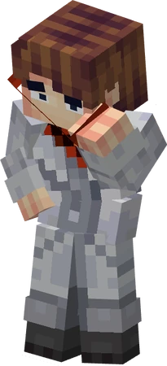

Уже есть аккаунт? Войти
У вас все же нет аккаунта? зарегистрироваться
альтернативная версия (альтер-эго) Лололошки из другой реальности. Один из главных персонажей сезона Сердце Вселенной. Появлялся в финале сезона Тринадцать огней и в сезоне Последняя реальность. В отличии от Лололошки, Джон не молчаливый и открыто добродушный, напротив, он очень эмоциональный и болтливый, почти в каждое слово вставляет шутку либо сарказм, в то время как Лололошка практически никогда не шутит. Много кривляется и в целом ведёт себя несерьёзно, подобно ребёнку или «взрослому хулигану». Его действия спонтанны и непредсказуемы. Джон нередко ведёт себя токсично и безразлично по отношению к другим.
 Он отлично подбирает слова, чтобы грамотно унизить своего оппонента и показать, насколько он гениален и умён, что, впрочем, нельзя назвать ложью. Несмотря на свой инфантильный характер, Джон обладает большими знаниями, которых не имеет даже Ангел Смерти. В этом он тоже является отличным от ничего не знающего о своей природе Лололошки, постоянно теряющего память, из-за чего его поиск самого себя от каждого перемещения начинается сначала.В силу своего характера и эгоистичной натуры у него не так много друзей